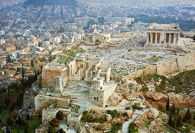

 Η Αθήνα είναι η πρωτεύουσα και μεγαλύτερη πόλη της Ελλάδας. Είναι από τις παλαιότερες πόλεις του κόσμου, με την καταγεγραμμένη ιστορία της να φθάνει ως το 3.200 π.Χ. Η Αρχαία Αθήνα, μια περιτοιχισμένη πόλη, ήταν μία πανίσχυρη πόλη-κράτος, που αναπτύχθηκε παράλληλα με το λιμάνι της, το οποίο αρχικά ήταν το Φάληρο και αργότερα ο Πειραιάς. Κέντρο των τεχνών, της γνώσης και της φιλοσοφίας, έδρα της Ακαδημίας του Πλάτωνα και το Λυκείου του Αριστοτέλη, αναφέρεται ευρέως ως λίκνο του Δυτικού πολιτισμού και γενέτειρα της δημοκρατίας, κυρίως λόγω της επίδρασης των πολιτιστικών και πολιτικών επιτευγμάτων της κατά τους 5ο και 4ο αιώνες π.Χ. στο υπόλοιπο της τότε γνωστής Ευρωπαϊκής ηπείρου. Μια κοσμοπολίτικη μητρόπολη σήμερα, η σύγχρονη Αθήνα είναι το κέντρο της οικονομικής, χρηματοπιστωτικής, βιομηχανικής, πολιτικής και πολιτιστικής ζωής της Ελλάδας. Το 2012 η Αθήνα κατατασσόταν ως η 39η πλουσιότερη πόλη στον κόσμο ως προς την αγοραστική δύναμη και ως 77η ακριβότερη σε μελέτη της UBS.